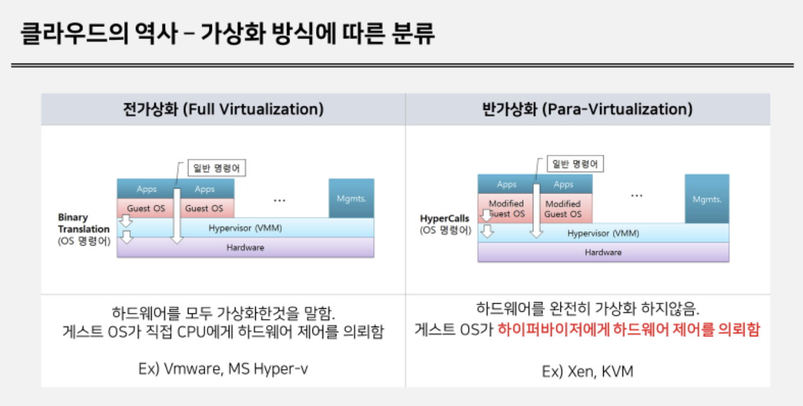
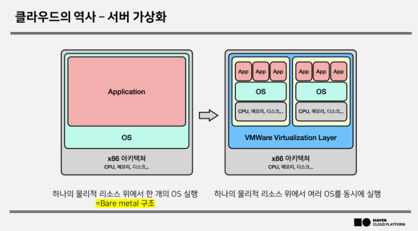
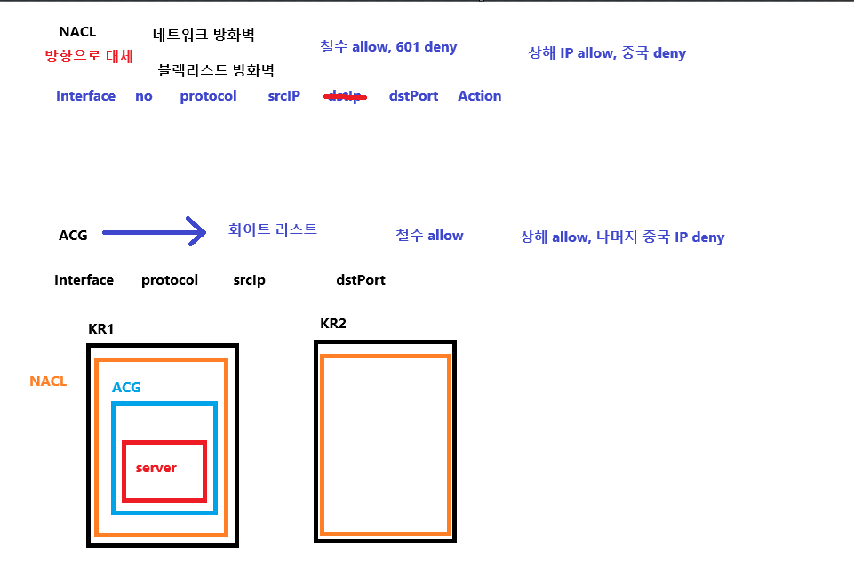
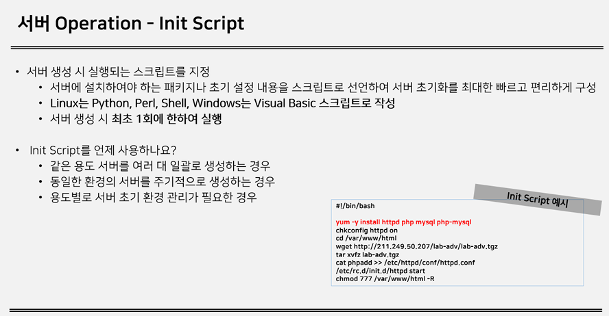
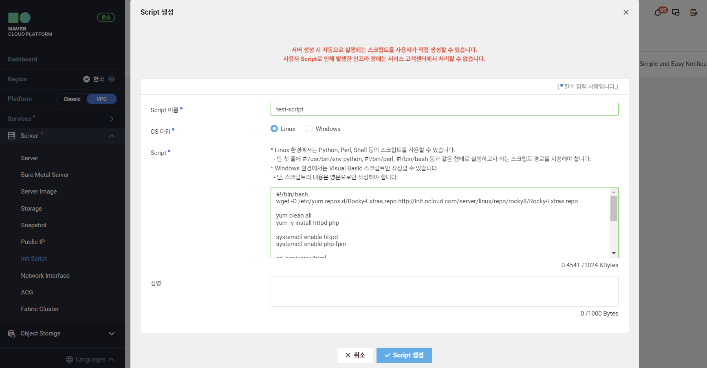

클라우드의 역사


하이퍼바이저(Hipervisor)
- 하이퍼바이저
- 가상화를 가능하게 하는 소프트웨어 또는 펌웨어 계층으로, 물리적 하드웨어와 가상 머신(Virtual Machine, VM) 사이에서 자원을 관리
- 하이퍼바이저는 가상 머신들이 서로 간섭하지 않고 독립적으로 실행될 수 있도록 하며, 물리적 하드웨어를 효율적으로 분배하고 관리하는 역할을 한다.
항목 전가상화 (Fully Virtualization) 반가상화 (Paravirtualization) 운영 체제 수정 여부 수정이 필요 없음. 기존 OS를 그대로 사용할 수 있음. 하이퍼바이저와 통신하도록 OS를 수정해야 함. 성능 에뮬레이션 때문에 약간의 오버헤드 발생. 하이퍼바이저와 직접 통신하여 더 높은 성능 제공. 호환성 기존 하드웨어 및 OS와 호환성이 높음. 하이퍼바이저에 최적화된 OS만 사용 가능. 예시 VMware, Microsoft Hyper-V, VirtualBox 등. Xen 하이퍼바이저 (반가상화 지원).
NACL & ACG

Init Script


#!/bin/bash
wget -O /etc/yum.repos.d/Rocky-Extras.repo http://init.ncloud.com/server/linux/repo/rocky8/Rocky-Extras.repo
yum clean all
yum -y install httpd php mariadb-server php-mysqlnd redis
sleep 60
cd /var/www/html
wget https://kr.object.ncloudstorage.com/ncp-manual/ncp/ncp-lab.tgz
tar xvfz ncp-lab.tgz
/usr/bin/cp -rf php.conf /etc/httpd/conf.d/php.conf
/usr/bin/cp -rf www.conf /etc/php-fpm.d/www.conf
systemctl enable mariadb
systemctl enable httpd
systemctl enable php-fpm
systemctl start mariadb
systemctl start httpd
systemctl start php-fpm